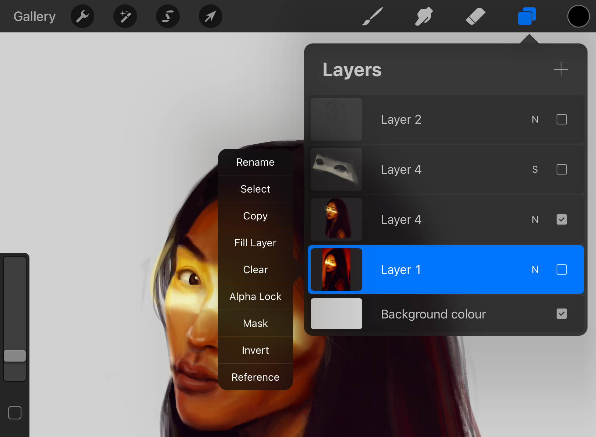

In this section you will learn about layer masks and how to integrate them in your
design.
Before you begin you need an open project in Procreate with at
least 1 added layer.
Layer masks allow you to selectively modify the opacity (transparency) of the
layer they belong to. They are especially useful when you need to selectively modify
the opacity of different areas across a single layer.
Click on the Layers icon
Swipe right-to-left on your layer of choice to open the menu.
Figure 1. Layer Mask Menu 
Tap on Mask.
Your layer mask will appear above the selected layer.Figure 2. Layer Mask Preview
Erasing or painting in black hides parts of the parent layer, and painting in white
reveals parts. Varying shades of gray alter the content with corresponding levels of
opacity.